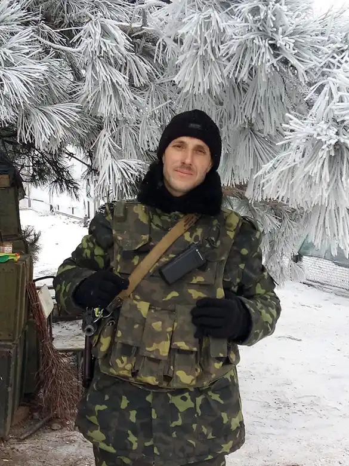

Народився 1977 року в Луганську. Від 2008 року живе і працює в Києві.
Під час АТО служив навідником танку за 15 кілометрів від лінії розмежування. До мобілізації працював ведучим культурних програм на "Українському радіо".
Автор збірок поезій "Релі —— вгору, релі —— вниз" (1999), "Поет сліпучого тембру" (2007, 1ше видання), (2018, 2ге видання) Микола Байдюк перекладає пісні Боба Ділана, поезії Стівена Крейна, О. Генрі, Ф. Бернет та інших авторів.